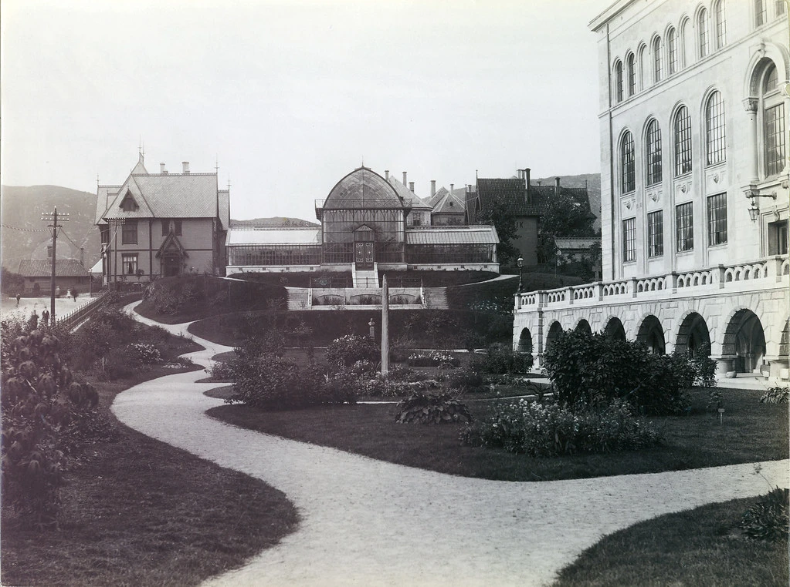
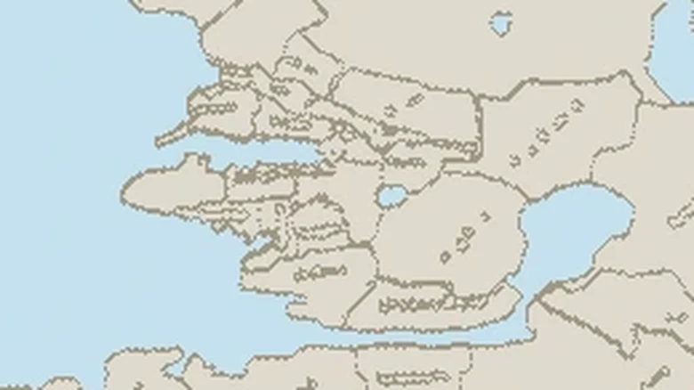

Botanikk
Et leserinnlegg om Knut Fægri, botanikk og hva du bør lese.

Strøk og nabolag i Bergen
Et interaktivt kart over strøkene i sentrum av Bergen.
Ingen innlegg passer med filtrene dine.
Om meg
4de generasjons bergenser. Oppvokst ved foten av fjellsiden, nedenfor Skansen brannstasjon. Nabolaget heter Fjellet, men de færreste kaller det for, eller i det hele tatt vet at det heter det.
Eg er en drømmer, bergensnostalgiker, for ikke å si: en urban melankoliker. Noen kunne til og med sagt: en kontrafaktisk historiker, men eg er ingen historiker. Eg tenker mye på hvordan byen ville ha sett ut hvis det ikke hadde for alle bybrannene (er det derfor forballaget heter Brann?). Hvordan hadde det vært her, hvis den kalde arkitekturen fra 60-tallet ikke hadde fått herje? Men for all del, det kunne vært mye verre, ta Oslo for eksempel, men nok om det.
Eg tenker på gamle Hotell Norge. Bygget i 1885, som overlevde både bybrannen i 1916 og andre verdenskrig, da det hovedsakelig huset tyske offiserer. Revet i 1961 til fordel for dagens koordinatsystem i betong. Nei, gamle Hotell Norge lå der nye Hotell Norge ligger i dag, eg blandet med annet, like flott bygg som lå der Gulatinget ligger, nemlig Hotel Metropol, et hotell eg også tenker på. En (ukjent) bergensavis sa det kanskje best da dets på en gang imponerende og tiltrekkende ytre, lyser og liver opp i en av vårs by vakreste kvartaler med marmorets dans og fargevirkningens harmoni. Det var også 60 værelser.
Takk
J
Kontakt
Fortell kort hva du lurer på, så svarer jeg så snart jeg kan.